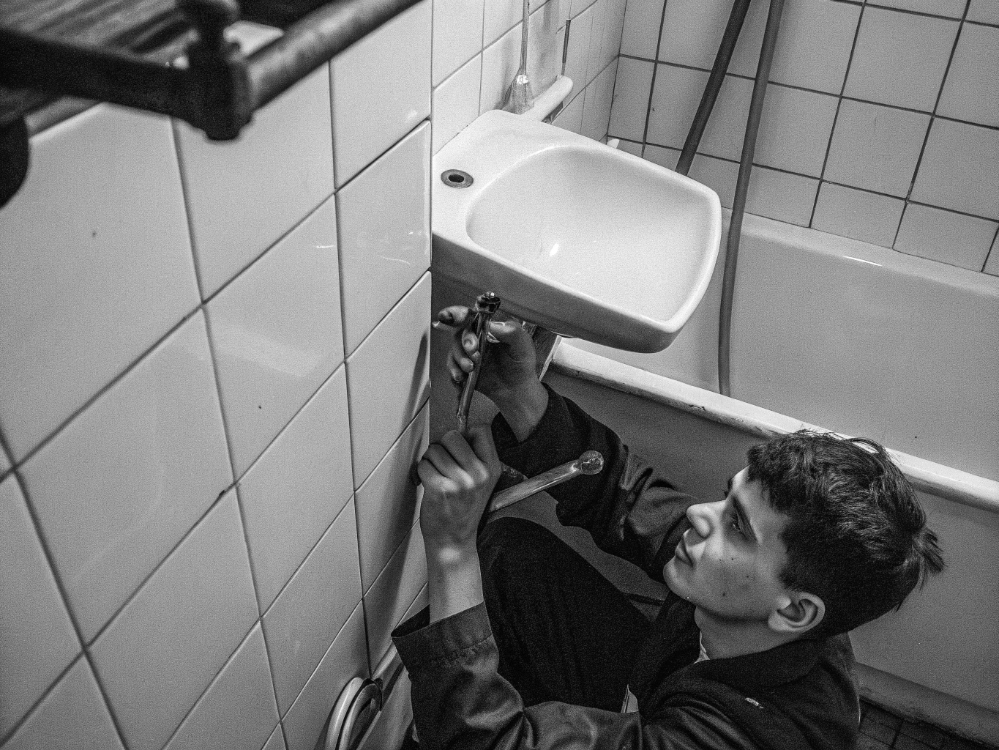
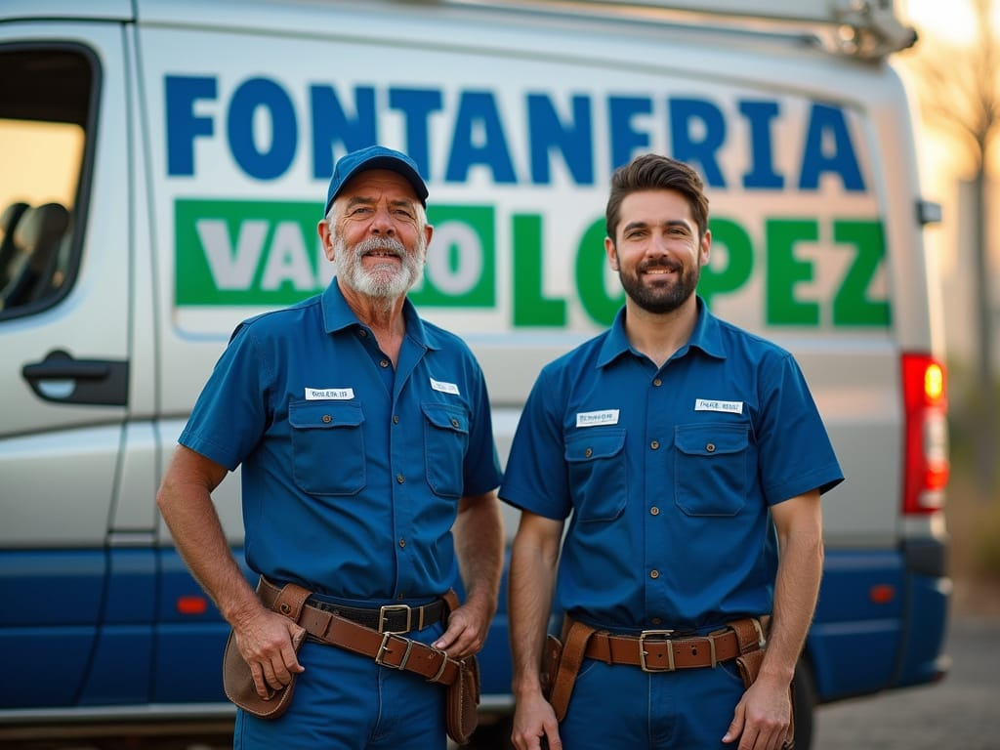
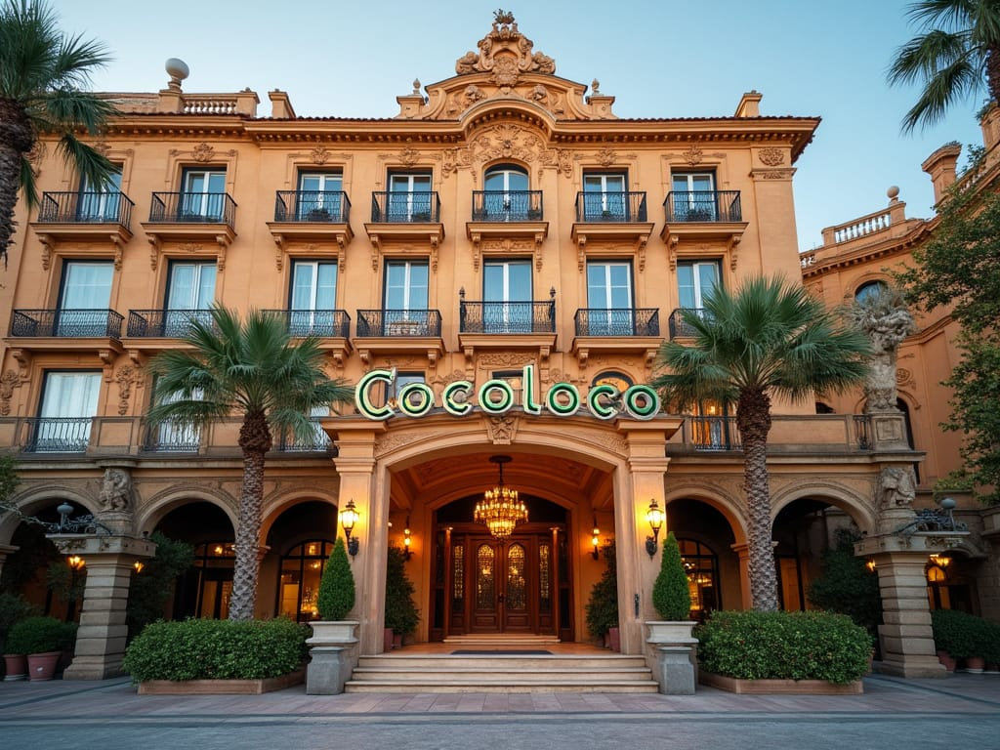

A principios de los años 80, Pedro López era un joven que se iniciaba en el mundo laboral de la mano de su padre acompañándole en sus trabajos de la construcción, encargándose de las labores de fontanería. Viendo que aquel negocio estaba en auge, y con su alma de emprendedor, decidió instalarse por su cuenta y crear su propia empresa: FONTANERÍA LÓPEZ


En la actualidad, tras mas de 40 años de servicio, Pedro tiene consolidada su empresa en Zaragoza aportando toda su experiencia, acompañado de su hijo, y asegurándose que no hay mejores manos en temas de saneamientos. Su servicio estrella de 24 horas, además de la novedosa calefacción por agua radiante de suelo hacen que Fontanería López siga siendo una empresa puntera.

Sus innumerables tareas a particulares a lo largo de estas cuatro décadas se vieron reflejados en los trabajos que realizó en el Hotel Cocoloco de la capital maña, aprovechando el auge del turismo; o la moderna Residencia de Ancianos María Pilates, una de las mas grandes de Aragón; además de varios restaurantes de reconocido prestigio con estrellas Michelín.